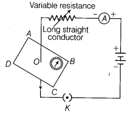
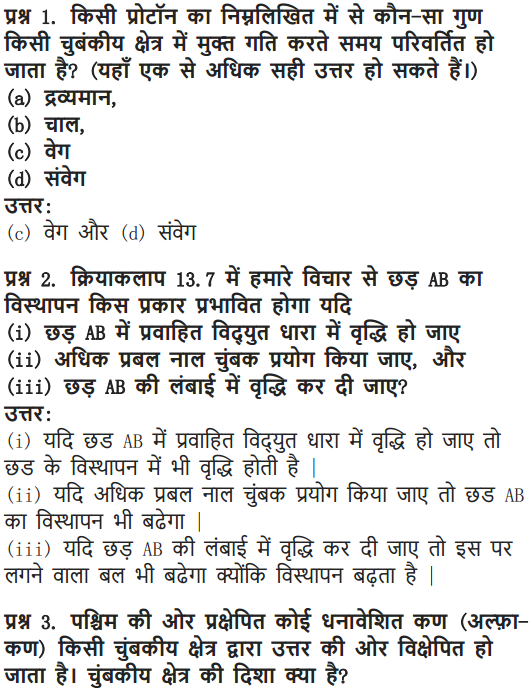
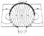

NCERT Solutions For Class 10 Science Chapter 13 Magnetic Effects Of Electric Current: In this article, you will find out all the necessary information regarding the magnetic effect of electric current class 10 NCERT solutions. So the students who are in search of NCERT Solutions For Class 10 Science Chapter 13 Magnetic Effects Of Electric Current can refer to this article.
Magnetic Effects Of Electric Current Class 10 NCERT questions and answers were solved by the best academic experts in order to help you a better understanding. So the candidates who want to secure a decent grade in class 10 board exams can refer to this article and solve magnetic effect of electric current science class 10 NCERT solutions. Read on to find out everything about NCERT Solutions For Class 10 Science Chapter 13 Magnetic Effects Of Electric Current.
NCERT Solutions for Class 10 Science Chapter 13 Magnetic Effects of Electric Current
Before getting into the details of NCERT Solutions For Class 10 Science Chapter 13 Magnetic Effects Of Electric Current, let’s have an overview of topics and subtopics under magnetic effect of electric current class 10 NCERT pdf:
- Magnetic Effects Of Electric Current
- Magnetic Field And Field Lines
- Magnetic Field Due To A Current-Carrying Conductor
- Force On A Current-Carrying Conductor In A Magnetic Field
- Electric Motor
- Electromagnetic Induction
- Electric Generator
- Domestic Electric Circuits
Free download NCERT Solutions for Class 10 Science Chapter 13 Magnetic Effects Of Electric Current PDF in Hindi Medium as well as in English Medium for CBSE, Uttarakhand, Bihar, MP Board, Gujarat Board, and UP Board students, who are using NCERT Books based on updated CBSE Syllabus for the session 2019-20.
- विद्युत धारा का चुम्बकीय प्रभाव कक्षा 10 विज्ञान हिंदी में
- Class 10 Magnetic Effects of Electric Current Important Questions
- Magnetic Effects of Electric Current Class 10 Notes
- Magnetic Effects of Electric Current NCERT Exemplar Solutions
- Magnetic Effects of Electric Current Class 10 Extra Questions
- Class 10 Science Magnetic Effects of Electric Current Mind Map
NCERT Solutions for Class 10 Science Chapter 13 Intext Questions
Page Number: 224
Question 1
Why does a compass needle get deflected when brought near a bar magnet ?
Answer:
The magnetic field of the magnet exerts force on both the poles of the compass needle. The forces experienced by the two poles are equal and opposite. These two forces form a couple which deflects the compass needle.
Page Number: 228
Question 1
Draw magnetic field lines around a bar magnet.
Answer:
Question 2
List the properties of magnetic lines of force.
Answer:
Properties of magnetic lines of force :
- The magnetic field lines originate from the north pole of a magnet and end at its south pole.
- The magnetic field lines become closer to each other near the poles of a magnet but they are widely separated at other places.
- Two magnetic field lines do not intersect one another.
Question 3
Why don’t two magnetic lines of force intersect each other ?
Answer:
This is due to the fact that the resultant force on a north pole at any point can be only in one direction. But if the two magnetic field lines intersect one another, then the resultant force on north pole placed at the point of intersection will be along two directions, which is not possible.
Page Number: 229 – 230
Question 1
Consider a circular loop of wire lying on the plane of the table. Let the current pass through the loop clockwise. Apply the right hand rule to find out the direction of the magnetic field inside and outside the loop.
Answer:
As shown in figure alongside, each section of wire produces its concentric set of lines of force. By applying right hand thumb rule, we find that all the sections produce magnetic field downwards at all points inside the loop while at the outside points, the field is directed upwards. Therefore, the magnetic field acts normally into the plane of the paper at the points inside the loop and normally out of the plane of paper at points outside the loop.
Question 2
The magnetic field in a given region is uniform. Draw a diagram to represent it. [CBSE 2013, 2014]
Answer:
A uniform magnetic field in a region is represented by drawing parallel straight lines, ail pointing in the same direction.
For example, the uniform magnetic field which exists inside a current-carrying solenoid can be represented by parallel straight lines pointing from its S-pole to N-pole (as shown in figure).
Question 3
Choose the correct option.
The magnetic field inside a long straight solenoid-carrying current
(i) is zero
(ii) decreases as we move towards its end
(iii) increases as we move towards its end
(iv) is the same at all points
Answer:
(iv) Is the same at all points.
Page Number: 231 – 232
Question 1
Which of the following property of a proton can change while it moves freely in a magnetic field. (There may be more than one correct answer.)
(i) Mass
(ii) Speed
(iii) Velocity
(iv) Momentum
Answer:
The correct options are (iii) velocity, (iv) momentum.
Question 2
In Activity 13.7 how do we think the displacement of rod AB will be affected if (i) current in rod AB is increased (ii) a stronger horse-shoe magnet is used; and (iii) length of the rod AB is increased ?
Answer:
(i) When the current in the rod AB is increased, force exerted on the conductor increases, so the displacement of the rod increases.
(ii) When a stronger horse-shoe magnet is used, the magnitude of the magnetic field increases. This increases the force exerted on the rod and the displacement of the rod.
(iii) When the length of the rod AB is increased, force exerted on the conductor increases, so the displacement of the rod increases.
Question 3
A positively-charged particle (alpha particle) projected towards west is deflected towards north by a magnetic field.
The direction of magnetic field is :
(i) towards south
(ii) towards east
(iii) downward
(iv) upward
Answer:
(iv) Upward.
Here, the positively charged alpha particles are moving towards west, so the direction of current is towards east. The deflection is towards north, so the force is towards north, so, we are given that
(i) direction of current is towards west
(ii) direction of force is towards north.
Let us now hold the forefinger, middle finger and thumb of our left-hand at right angles to one another. Adjust the hand in such a way that our mid finger points towards west (in the direction of current) and thumb points towards north (in the direction of force). Now, if we look at our forefinger, it will be pointing upward. Because the direction of forefinger gives the direction of magnetic field, therefore, the magnetic field is in the upward direction.
Page Number: 233
Question 1
State Fleming’s left hand rule. [CBSE 2018]
Answer:
Fleming’s left hand rule : Stretch the first finger, the middle finger and the thumb of your left hand mutually perpendicular to each other in such a way that the first finger represents the direction of the magnetic field, the middle finger represents the direction of the current in the conductor, then the thumb will represent the direction of motion of the conductor.
Question 2
What is the principle of an electric motor ? [CBSE 2018]
Answer:
A motor works on the principle of magnetic effect of current. When a rectangular coil is placed in a magnetic field and current is passed through it, a force acts on the coil which rotates it continuously.
When the coil rotates, the shaft attached to it also rotates. In this way the electrical energy supplied to the motor is converted into the mechanical energy of rotation.
Question 3
What is the role of the split ring in an electric motor ?
Answer:
The split ring reverses the direction of current in the armature coil after every half rotation, i.e., it acts as a commutator. The reversed current reverses the direction of the forces acting on the two arms of the armature after every half rotation. This allows the armature coil to rotate continuously in the same direction.
Page Number: 236
Question 1
Explain different ways to induce current in a coil.
Answer:
Different ways to induce current in a coil are :
- moving a magnet towards or away from the coil or vice-versa, and
- changing current in the neighbouring coil.
Page Number: 237
Question 1
State the principle of an electric generator.
Answer:
The electric generator works on the principle that when a straight conductor is moved in a magnetic field, then current is induced in the conductor.
In an electric generator, a rectangular coil is made to rotate rapidly in the magnetic field between the poles of a horse-shoe type magnet. When the coil rotates, it cuts the magnetic field lines due to which a current is produced in the coil.
Question 2
Name some sources of direct current.
Answer:
Some of the sources of direct current are dry cells, button cells, lead accumulators.
Question 3
Which sources produce alternating current ?
Answer:
Alternating current is produced by AC generators of nuclear power plants, thermal power plants, hydroelectric power stations, etc.
Question 4
Choose the correct option : A rectangular coil of copper wires is rotated in a magnetic field. The direction of the induced current changes once in each:
(i) two revolution
(ii) one revolution
(iii) half revolution
(iv) one-fourth revolution
Answer:
(iii) Half revolution.
Page Number: 238
Question 1
Name two safety measures commonly used in electric circuits and appliances.
Answer:
(i) Earthing and
(ii) Electric fuse.
Question 2
An electric oven of 2 kW power rating is operated in a domestic electric circuit (220 V) that has a current rating of 5 A. What result do you expect ? Explain.
Answer:
The electric oven draws a current given by
Thus the electric oven draws current much more than the current rating 5 A. That is the circuit is overloaded. Due to excessive current, the fuse wire will blow and the circuit will break.
What precautions should be taken to avoid the overloading of domestic electric circuits ?
To avoid the overloading of domestic electric circuits, the following precautions should be taken :
(i) The wires used in the circuit must be coated with good insulating materials like PVC, etc.
(ii) The circuit must be divided into different sections and a safety fuse must be used in each section.
(iii) High power appliances like air-conditioner, refrigerator, a water heater, etc. should not be used simultaneously.
NCERT Solutions for Class 10 Science Chapter 13 Textbook Chapter End Questions
Question 1
Which of the following correctly describes the magnetic field near a long straight wire ?
(i) the field consists of straight lines perpendicular to the wire
(ii) the field consists of straight lines parallel to the wire
(iii) the field consists of radial lines originating from the wire
(iv) the field consists of concentric circles centred on the wire
Answer:
(iv) The field consists of concentric circles centred on the wire
Question 2
The phenomenon of electromagnetic induction is
(i) the process of charging a body
(ii) the process of generating magnetic field due to a current passing through a coil
(iii) producing induced current in a coil due to relative motion between a magnet and the coil
(iv) the process of rotating a coil of an electric motor
Answer:
(iii) Producing induced current in a coil due to relative motion between a magnet and the coil
Question 3
The device used for producing electric current is called a
(i) generator
(ii) galvanometer
(iii) ammeter
(iv) motor
Answer:
(i) Generator.
Question 4
The essential difference between an AC generator and a DC generator is that
(i) AC generator has an electromagnet while a DC generator has permanent magnet
(ii) DC generator will generate a higher voltage
(iii) AC generator will generate a higher voltage
(iv) AC generator has slip rings while the DC generator has a commutator
Answer:
(iv) AC generator has slip rings while the DC generator has a commutator
Question 5
At the time of short circuit, the current in the circuit
(i) reduces substantially
(ii) does not change
(iii) increases heavily
(iv) varies continuously
Answer:
(iii) Increases heavily.
Question 6
State whether the following statements are True or False.
(i) An electric motor converts mechanical energy into electrical energy.
(ii) An electric generator works on the principle of electromagnetic induction.
(iii) The field at the centre a long circular coil carrying current will be parallel straight lines.
(iv) A wire with a green insulation is usually the live wire of an electric supply.
Answer:
(i) False
(ii) True
(iii) True
(iv) False.
Question 7
List three sources of magnetic fields.
Answer:
(i) Current carrying conductor
(ii) Electromagnets
(iii) Permanent magnets
Question 8
How docs a solenoid behave like a magnet ? Can you determine the north and south poles of a current-carrying solenoid with the help of a bar magnet? Explain.
Answer:
A solenoid behaves like a magnet in the following ways.
- The magnetic field produced by a current carrying solenoid is very much similar to that of a bar magnet.
- Like a bar magnet, one end of the solenoid has N-polarity while the other end has S-polarity.
To determine the north and south poles, we bring N-pole of the bar magnet near one end of the solenoid. If there is an attraction, then that end of the solenoid has south polarity and the other has north polarity. If there is a repulsion, then that end of the solenoid has north polarity and the other end has south polarity because similar poles repel each other.
Question 9
When is the force experienced by a current-carrying conductor placed in a magnetic field largest ?
Answer:
When the conductor carries current in a direction perpendicular to the direction of the magnetic field, the force experienced by the conductor is largest.
Question 10
Imagine that you are sitting in a chamber with your back to one wall. An electron beam, moving horizontally from back wall towards the front wall, is deflected by a strong magnetic field to your right side. What is the direction of magnetic field ?
Answer:
Here the electron beam is moving from our back wall to the front wall, so the direction of current will be in the opposite direction, from front wall towards back wall or towards us. The direction of deflection (or force) is towards our right side.
We now know two things :
- direction of current is from front towards us, and
- direction of force is towards our right side.
Let us now hold the forefinger, middle finger and thumb of our left hand at right angles to one another. We now adjust the hand in such a way that our centre finger points towards us (in the direction of current) and thumb points towards right side (in the direction of force). Now, if we look at our forefinger, it will be pointing vertically downwards. Since the direction of forefinger gives the direction of magnetic field, therefore, the magnetic field is in the vertically downward direction.
Question 11
Draw a labelled diagram of an electric motor. Explain its principle and working. What is the function of a split ring in an electric motor ?
Answer:
Electric Motor : The device used to convert electrical energy to mechanical energy is called Electric Motor. It is used in fans, machines, etc.
Principle : NCERT Solutions for Class 10 Science Chapter 13 Magnetic Effects of Electric CurrentElectric motor works on the principle of force experienced by a current carrying conductor in a magnetic field. The two forces in the opposite sides are equal and opposite. Since they act in different lines they bring rotational motion.
Working of an electric motor :
When current starts to flow, the coil ABCD is in horizontal position. The direction of current through armature coil has the direction from A to B in the arm AB and from C to D in the arm CD. The direction of force exerted on the coil can be found through Fleming’s left hand law.
According to this law, it is found that the force exerted on the part AB, pushes the coil downwards. While the force exerted on the part CD pushes it upwards. In this way, these two forces being equal and opposite form a couple that rotates the coil in anticlockwise direction.
When the coil is in vertical position, the brushes X and Y would touch the centre of the commutator and the current in the coil is stopped. Though current is stopped but the coil comes back in horizontal state due to momentum.
After half rotation, the polarity of the commutator also changes, because now Q makes contact with brush X and P with brush Y. Therefore, now the force exerts downwards on the arm AB and upwards on the arm CD and thus again a couple of forces is formed that rotates the coil in clockwise direction. This process is repeated again and again and the coil rotates til! the current flows across it.
Function of split ring : Split ring in a motor acts as a commutator, i.e., it reverses the flow of current in the circuit due to which the direction of the forces acting on the arms also reverses.
Question 12
Name some devices in which electric motors are used.
Answer:
Electric motor is used in the appliances like electric fans, washing machine, mixers, grinders, blenders, computers, MP3 players, etc.
Question 13
A coil of insulated copper wire is connected to a galvanometer. What will happen if a bar magnet is (t) pushed into the coil (ii) withdrawn from inside the coil (iii) held stationary inside the coil ? [CBSE (Delhi) 2017, AICBSE 2016]
Answer:
(i) As a bar magnet is pushed into the coil, a momentary deflection is observed in the galvanometer indicating the production of a momentary current in the coil.
(ii) When the bar magnet is withdrawn from the coil, the deflection of galvanometer is in opposite direction showing the production of an opposite current.
(iii) When the bar magnet is held stationary inside the coil, there is no deflection in galvanometer indicating that no current is produced in the coil.
Question 14
Two circular coils A and B are placed closed to each other. If the current in the coil A is changed, will some current be induced in the coil B ? Give reason.
Answer:
Yes, some current will be induced in the coil B. When the current in coil A is changed, some current is induced in the coil B. Due to change in current in coil A, the magnetic field lines linked with coil A and with coil B get changed. This sets up induced current in coil B.
Question 15
State the rule to determine the direction of a (i) magnetic field produced around a straight conductor-carrying current (it) force experienced by a current-carrying straight conductor placed in a magnetic field which is perpendicular to it, and (in) current induced in a coil due to its rotation in a magnetic field.
Answer:
(i) Right hand thumb rule : If the current carrying conductor is held in the right hand such that the thumb points in the direction of the current, then the direction of the curl of the fingers will give the direction of the magnetic field.
(ii) Fleming’s left hand rule : NCERT Solutions for Class 10 Science Chapter 13 Magnetic Effects of Electric Current Stretch the forefinger, the central finger and the thumb of the left hand mutually perpendicular to each other. If the forefinger points in the direction of the magnetic field, the middle finger in the direction of current, then the thumb points in the direction of force in the conductor.
(iii) Fleming’s right hand rule : Stretch the thumb, forefinger and the central finger of the right hand mutually perpendicular to each other. If the forefinger points in the direction of magnetic field, thumb in the direction of motion of the conductor, then the middle finger points in the direction of current induced in the conductor.
Question 16
Explain the underlying principle and working of an electric generator by drawing a labelled diagram. What is the function of brushes ?
Answer:
Principle : The electric generator is based on the principle of electromagnetic induction. When a coil is rotated with respect to a magnetic field, the number of magnetic field lines through the coil changes. Due to this a current is induced in the coil whose direction can be found by Fleming’s right hand rule.
Working : When the armature coil ABCD rotates in a magnetic field produced by the permanent magnets, it cuts through the magnetic lines of force.
Due to the rotation of armature coil, the associated magnetic field changes and an induced electromagnetic force is produced in it. The direction of this induced electromotive force or current can be determined by using Fleming’s right hand rule.
In first half cycle the current flows in one direction by brush B1 and in second it flows in opposite direction by brush B2. This process continues. So the current produced is alternating in nature.
Functions of Brushes : Brushes in contact with rings provide the current for external use.
Question 17
When does an electric short circuit occur ?
Answer:
In a domestic circuit, short-circuit occurs when live and neutral wire come in direct contact with each other without any resistance. The resistance of the circuit becomes zero and excessive current starts to flow through it.
Question 18
What is the function of an earth wire ? Why is it necessary to earth metallic appliances ?
Answer:
Earth wire is a safety measure that provides a low resistance conducting path to the current. Sometimes due to excess heat or wear and tear, the live wire comes in direct contact with the metallic cover of the appliances, which can give an electric shock on touching them. To prevent from the shock the metallic part is connected to the earth through a three-pin plug due to which the current flows to the earth at the instant there is a short circuit.
It is necessary to earth metallic appliances because it ensures that if there is any current leakage in the metallic cover, the potential of the appliance becomes equal to that of the earth. The potential of the earth is zero. As a result, the person handling the appliance will not get an electric shock.
NCERT Solutions for Class 10 Science Chapter 13 Magnetic Effects of Electric Current
Magnetic effects of current: Magnetic field, field lines, field due to a current carrying conductor, field due to current carrying coil or solenoid; Force on current carrying conductor, Fleming’s left hand rule. Electromagnetic induction, Induced potential difference, Induced current, Fleming’s right hand rule, Direct current, Alternating current, frequency of AC, Advantage of AC over DC, Domestic electric circuits.
| Board | CBSE |
| Textbook | NCERT |
| Class | Class 10 |
| Subject | Science |
| Chapter | Chapter 13 |
| Chapter Name | Magnetic Effects of Electric Current |
| Number of Questions Solved | 39 |
| Category | NCERT Solutions |
Formulae Handbook for Class 10 Maths and Science
Question 1
Why does a compass needle gets deflected when brought near a bar magnet?
Solution:
A compass needle is, in fact, a small bar magnet. If this is brought near another bar magnet, the like poles repel and the needle gets deflected.
Question 2
Draw magnetic field lines around a bar magnet?
Solution:
More Resources for CBSE Class 10
- NCERT Solutions
- NCERT Solutions for Class 10 Science
- NCERT Solutions for Class 10 Maths
- NCERT Solutions for Class 10 Social
- NCERT Solutions for Class 10 English
- NCERT Solutions for Class 10 Hindi
- NCERT Solutions for Class 10 Sanskrit
- NCERT Solutions for Class 10 Foundation of IT
- RD Sharma Class 10 Solutions
Question 3
List the properties of magnetic lines of force.
Solution:
a) Magnetic lines are directed from the north pole towards the south pole.
b) They do not cross each other.
c) They are more crowded near the poles than at any other region in the field.
d) They are closed curves.
e) In the uniform magnetic field, the lines of force are parallel to one another.
Download NCERT Solutions for Class 10 Science Chapter 13 Magnetic Effects of Electric Current PDF
Question 4
Why don’t two magnetic lines of force intersect each other?
Solution:
No two field-lines are found to cross each other. If they did, it would mean that at the point of intersection, the compass needle would point towards two directions, which is not possible.
Question 5
Consider a circular loop of wire lying in the plane of the table. Let the current pass through the loop clockwise. Apply the right-hand rule to find out the magnetic field inside and outside the loop.
Solution:
At every point of a current –carrying loop, the concentric circles representing the magnetic field around it would become larger and larger as we move away from the wire. By the time we reach at the center of the circular loop, the arc of these big circles would appear as straight lines.
Question 6
The magnetic field in a given region is uniform. Draw a diagram to represent it.
Solution:
Question 7
The magnetic field inside a long straight solenoid-carrying current
a) is zero
b) decreases as we move towards its end
c) increases as we move towards its end
d) is the same at all points
Solution:
d) is the same at all points
Question 8
Which of the following property of a proton can change while it moves freely in a magnetic field?
a) Mass
b) Speed
c) Velocity
d) Momentum
Solution:
c) Velocity
d) Momentum.
Question 9
(a) Current in rod AB is increased?
(b) A stronger horseshoe magnet is used?
(c) Length of the rod AB is increased?
Solution:
(a) If the current in rod AB is increased, the displacement of rod AB will not be affected.
(b) If a stronger horseshoe magnet is used, force is exerted and hence the displacement increases.
(c) If the length of the rod AB is increased there is no change in the displacement of the rod AB.
Question 10
A positively-charged particle projected towards west is deflected towards north by a magnetic field. The direction of the magnetic field is
a) Towards south
b) Towards east
c) Downward
d) Upward
Solution:
b) Towards east.
Question 11
State Fleming’s left-hand rule.
Solution:
Fleming’s left-hand rule states that, stretch the thumb, fore finger and middle finger of the left hand such that they are mutually perpendicular. If the first finger points in the direction of magnetic field and the second finger in the direction of current, then the thumb will point in the direction of motion or the force acting on the conductor.
Question 12
What is the principle of an electric motor?
Solution:
Principle of an electric motor:
The working of the electric motor is based on the mechanical effect of an electric current. A conductor carrying a current placed in a magnetic field experiences a mechanical force.
In the motor, when a current is passed through a rectangular coil of wire placed in a magnetic field, the coil rotates continuously.
Question 13
What is the role of the split ring in an electric motor?
Solution:
In electric motor, the split ring acts as a commutator. A device that reverses the direction of flow of current through a circuit is called a commutator. The reversal of current also reverses the direction of force acting on the two arms AB and CD.
Question 14
Explain different ways to induce current in a coil.
Solution:
Current can be induced in a coil either by moving it in a magnetic field or by changing the magnetic field around it. The induced current is found to be the highest when the direction of motion of the coil is at right angles to the magnetic field. The process, by which a changing magnetic field in a conductor induces a current in another conductor, is called electromagnetic induction.
Question 15
State the principle of an electric generator.
Solution:
A generator is also known as a dynamo. It is a device used to convert mechanical energy in to electrical energy. The mechanical energy is used to rotate a conductor in a magnetic field to produce electricity. It is an application of electromagnetic induction.
An A.C generator generates an alternating current.
A D.C generator is used to deliver a current, which flows in the same direction.
Question 16
Name some source of direct current.
Solution:
The source of direct current is a split-ring type commutator, one brush is at all times in contact with the arm moving up in the field, while the other is in contact with the arm moving down. Thus a unidirectional current is produced.
Question 17
Which sources produce alternating current?
Solution:
The sources which produce alternating current is a permanent magnet called the field magnet, armature, slip ring and carbon brushes. After every half rotation the polarity of the current in the respective arms changes. Such a current, Which changes direction after equal intervals of time, is called an alternating current.
Question 18
A rectangular coil of copper wires is rotated in a magnetic field. The direction of the induced current changes once in each:
a) Two revolutions
b) One revolution
c) Half revolutions
d) One-fourth revolutions.
Solution:
b) One revolution.
Question 19
Name two safety measures commonly used in electric circuits and appliances.
Solution:
The use of an electric fuse prevents the electric circuits and appliance from a possible damage by passing the flow of unduly high electric current. The Joule heating that takes place in the fuse melts it to break the electric circuit.
Question 20
An electric oven of 2 KW power rating is operated in a domestic electric circuit (220 V) that has a current rating of 5 A. What result do you expect? Explain.
Solution:
V = 220 V, I = 5 A
Power, P = VI
P = 220 × 5
P = 1100 W
Therefore, power P = 1100 W = 1.1 KW
Therefore, an electric oven of 2 KW power rating cannot be operated in a domestic electric circuit (220 V) that has a current rating of 5 A because electric oven has higher power than the power of the electric circuit.
Question 21
What precaution should be taken to avoid the overloading of domestic electric circuits?
Solution:
Fuse is the most important safety device, to avoid the overloading of domestic electric circuits.
Too many appliances should not be connected to a single socket.
Question 22
Which of the following correctly describes the magnetic field near a long
straight wire?
(a) The field consists of straight lines perpendicular to the wire.
(b) The field consists of straight lines parallel to the wire.
(c) The field consists of radial lines originating from the wire.
(d) The field consists of concentric circles centred on the wire.
Solution:
(d) The field consists of concentric circles centred on the wire.
Question 23
The phenomenon of electromagnetic induction is
(a) the process of charging a body.
(b) the process of generating magnetic field due to a current passing through a coil.
(c) producing induced current in a coil due to relative motion between a magnet and the coil.
(d) the process of rotating a coil of an electric motor.
Solution:
(c) producing induced current in a coil due to relative motion between a magnet and the coil.
Question 24
The device used for producing electric current is called a
(a) generator.
(b) galvanometer.
(c) ammeter.
(d) motor.
Solution:
(a) generator.
Question 25
The essential difference between an AC generator and a DC generator is that:
(a) AC generator has an electromagnet while a DC generator has permanent magnet.
(b) DC generator will generate a higher voltage.
(c) AC generator will generate a higher voltage.
(d) AC generator has slip rings while the DC generator has a commutator
Solution:
(d) AC generator has slip rings while the DC generator has a commutator.
Question 26
At the time of short circuit, the current in the circuit
(a) reduces substantially.
(b) does not change.
(c) increases heavily.
(d) vary continuously.
Solution:
(c) increases heavily.
Question 27
State whether the following statements are true or false.
Solution:
(a) An electric motor converts mechanical energy into electrical energy – false.
(b) An electric generator works on the principle of electromagnetic induction – true
(c) The field at the centre of a long circular coil carrying current will be parallel straight lines – true.
(d) A wire with a green insulation is usually the live wire of an electric supply – true.
Question 28
List three sources of magnetic fields.
Solution:
a) Magnetic field due to a current through a straight conductor.
b) Magnetic field due to a current in a solenoid.
c) Magnetic field due to a current through a circular loop.
Question 29
How does a solenoid behave like a magnet? Can you determine the north and the south poles of a current-carrying solenoid with the help of a bar magnet? Explain.
Solution:
A coil of many circular turns of insulated copper wire wrapped closely in the shape of the cylinder is called a solenoid. The pattern of the magnetic field lines around a current- carrying solenoid is shown in this figure. In fact, one end of the solenoid behaves as a magnetic north pole, while the other behaves as the south pole. The field lines inside the solenoid are in the form of parallel straight lines. This indicates that the magnetic field is the same at all points inside the solenoid. That is, the field is uniform inside the solenoid.
A strong magnetic field produced inside a solenoid can be used to magnetise a piece of magnetic material, like soft iron, when placed inside the coil. The magnet so formed is called an electromagnet.
Question 30
When is the force experienced by a current-carrying conductor placed in a magnetic field the largest?
Solution:
The force experienced by a current-carrying conductor placed in a magnetic field is largest provided when the direction of current is at right angles to the direction of the magnetic field.
Question 31
Imagine that you are sitting in a chamber with your back to one wall. An electron beam, moving horizontally from back wall towards the front wall, is deflected by a strong magnetic field to your right side. What is the direction of magnetic field?
Solution:
The direction of magnetic field is towards west.
Question 32
Draw a labelled diagram of an electric motor. Explain its principle and working.What is the function of a split ring in an electric motor?
Solution:
A motor is a device that converts the electrical energy into mechanical energy.
Principle
An electric motor is based on the fact that when a current carrying conductor is placed in a magnetic field the conductor experiences a force which is given by Fleming’s Left Hand Rule. For example, when a rectangular coil is placed in the magnetic field and current is passed through it, a torque acts on the coil, which rotates it continuously. When the coil rotates, the shaft attached to it also rotates and therefore the electrical energy supplied to the motor is converted into the mechanical energy of rotation.
An electrical motor consists of a rectangular coil ABCD of insulated copper wire, wound on a soft iron core called armature. The coil is mounted between the poles of a magnet in such a way that it can rotate between the poles N and S. The two ends of the coil are soldered to the ends of a commutator whose main function is to reverse the direction of the current flowing through the coil every time the coil just passes the vertical position during its revolution.
Working
Suppose the coil ABCD is initially at a horizontal position. When the switch is in ON position the current enters the coil through the carbon brushes and the half ring ‘A’ of the commutator.
The current flows in the direction DCBA and leaves via the half ring ‘B’. In the side PQ of the coil, the direction is from Q to P towards the south and the direction of the magnetic field is from the N to S pole towards the east. So, by applying Fleming’s left hand rule, we find that it will experience a force in upward direction. Similarly, the side SR of the coil will experience a downward force. Thus we have two parallel wires experiencing forces in opposite directions. They form a couple tending to rotate the coil in the anticlockwise direction.
When the coil goes beyond the vertical position, the two commutator half rings automatically changes contact from one brush to the other. This reverses the direction of current through the coil which, in turn, reverses the direction of forces acting on the two sides of the coil. The sides of the coil are interchanged, but rotate in the same anticlockwise direction. This process is repeated again and again and the coil continues to rotate as long as the current is passing.
Question 33
Name some devices in which electric motors are used.
Solution:
Electric fans, refrigerators, mixers, washing machines, computers, MP3 players etc are some devices in which electric motors are used.
Question 34
A coil of insulated copper wire is connected to a galvanometer. What will happen if a bar magnet is
(i) pushed into the coil,
(ii) withdrawn from inside the coil,
(iii) held stationary inside the coil?
Solution:
(i) A deflection is observed in the galvanometer due to the induced current because of the changing magnetic flux (increasing) through the turns of the coil connected to the galvanometer.
(ii) A deflection is again observed in the galvanometer, as when it is pulled out, the flux linked with the coil due to the bar magnet decreases. Hence a current flows in the coil to reduce the change in flux. The deflection can be observed in the opposite direction as compared with the previous case.
(iii) No deflection is observed in the galvanometer. The flux linked with the coil due to the magnetic field is at a constant. Hence no current is induced due to the bar magnet.
Question 35
Two circular coils A and B are placed closed to each other. If the current in the coil A is changed, will some current be induced in the coil B? Give reason.
Solution:
Yes, if the current in the coil A is changed, then some current will be induced in the coil B because due to the change in the magnetic field effect around the coils.
Question 36
State the rule to determine the direction of a
(i) magnetic field produced around a straight conductor-carrying current,
(ii) force experienced by a current-carrying straight conductor placed in a magnetic field which is perpendicular to it, and
(iii) current induced in a coil due to its rotation in a magnetic field.
Solution:
(i) Right-hand thumb rule
Imagine that we are holding a current carrying straight conductor in the right hand such that the thumb points towards the direction of current. Then our fingers will wrap around the conductor in the direction of the field lines of the magnetic field. This is known as Right-hand thumb rule.
(ii) Fleming’s left-hand rule
Fleming’s left-hand rule states that, stretch the thumb, fore finger and middle finger of the left hand such that they are mutually perpendicular. If the first finger points in the direction of magnetic field and the second finger in the direction of current, then the thumb will point in the direction of motion or the force acting on the conductor.
(iii) Fleming’s right-hand rule
If the thumb and the first two fingers of right hand are held at right angles to each other, with the Forefinger held in the direction of the field, and the thumb in the direction of motion, the induced current I flows in the direction of the middle finger.
Question 37
Explain the underlying principle and working of an electric generator by drawing a labelled diagram. What is the function of brushes?
Solution:
A C. generator
“A C. generator” means “Alternating Current generator”. That is, an A. C. generator produces alternating current, which alternates (changes) in polarity continuously. We will now describe the construction an working of the A. C. generator or A. C. dynamo.
Construction of an A. C. generator
A simple A. C. generator consists of a rectangular coil ABCD that can be rotated rapidly between the poles N and S of a strong horseshoe type magnet M. The coil is made of a large number of turns of insulated copper wire. The ends A and D of the rectangular coil are connected to two circular pieces of copper metal called slip rings R1 and R2. As the slip rings R1 and R2 rotate with the coil, the two pieces of carbon called brushes, B1 and B2, keep contact with them. So, the current produced in the rotating coil can be tapped out through slip rings into the carbon brushes. From the carbon brushes B1 and B2 we take the current into various electrical appliances like radio, T. V., electric iron, bulbs, etc. But in this figure, we have shown only a galvanometer G connected the two carbon brushes.
Working of an A. C. generator
Suppose that the generator coil ABCD is initially in the horizontal position. Again suppose that he coil ABCD is being rotated in the anticlockwise direction between the poles N and S of a horseshoe type magnet.
(i) As the coil rotates in the anticlockwise direction, the side AB of the coil moves down cutting the magnetic lines of force near the N-pole of the magnet, and side CD moves up, cutting the lines of force near the S-pole of the magnet. Due to this, induced current is produced in the sides AB and DC of the coil. On applying Fleming’s right hand rule to the side AB and DC of the coil, we find that the currents are in the direction B to A and D to C respectively. Thus, the induced currents in the two sides of the coil are in the same direction, and we get an effective induced current in the direction BADC.
(ii) After half revolution, the sides AB and DC of the coil will interchange their positions. The side AB will come on the right hand side and DC will come on the left side. So, after half a revolution, side AB starts moving up and side DC starts coming down. As a result of this, the direction of induced current in each side of the coil is reversed after half a revolution. Since the direction of induced current in the coil is reversed after half revolution so the polarity (positive and negative) of the two ends of the coil also changes after half revolution. The end of coil which was positive in the first half of rotation becomes negative in the second in the second half. And the end which was negative in the first half revolution becomes positive in the second half of revolution. Thus, in 1 revolution of the coil, the current changes its direction 2 times.
The alternating current (A. C.) produced in India has a frequency of 50 Hz. That is, the coil is rotated at the rate of 50 revolutions per second. Since in 1 revolution of coil, the current changes its direction 2 times, so in 50 revolutions of coil, the current changes its direction 2 × 50 = 100 times. Thus, the A. C. supply in India changes its direction 100 times in 1 second. Another way of saying this is that the alternating current produced in India changes its direction every 1/100 second. That is, each terminal of the coil is positive (+) for 1/100 of a second and negative (-) for the next 1/100 of a second. This process is repeated again and again with the result that there is actually no positive and negative in an A. C. generator. We will now describe why the direction of induced current in the coil of an A. C. generator changes after every half revolution of the coil.
After every half revolution, each side of the generator coil starts moving in the opposite direction in the magnetic field. The side of the coil which was initially moving downwards in a magnetic field, after half revolution, it starts moving in opposite direction – upwards. Similarly the side of coil which was initially moving upwards, after half revolution, it starts moving downwards. Due to the change in the direction of motion of the two sides of the coil in the magnetic field after every half revolution, the direction of current produced in them also changes after every half revolution.
D. C. generator
“D. C. generator” means “Direct Current generator”. That is, a D. C. generator produces direct current and not alternating current. We will now describe the construction and working of D. C. generator or D. C. Dynamo.
Construction of a D. C. generator
A simple D. C. generator consists of a rectangular coil ABCD which cab be rotated rapidly between the poles N and S of a strong horse-shoe type magnet M. The generator coil is made of a large number of turns of insulated copper wire. The two ends of the coil are connected to the two copper half rings (or split rings) R1 and R2 of a commutator. There are two carbon brushes B1 and B2 which press lightly against the two half rings. When the coil is rotated, the two half rings R1 and R2 touch the two carbon brushes B1 and B2 one by one. So the current produced in the rotating coil can be tapped out through the commutator half rings into the carbon brushes. From the carbon brushes B1 and B2, we can take the current into the various electrical appliances like radio, T. V., electric iron, bulbs, etc. But in this figure, we have shown only a galvanometer G connected between the two carbon brushes. The galvanometer is a current detecting and current measuring instrument.
Working of a D. C. generator
Suppose that the generator coil ABCD is initially in the horizontal position. Again suppose that he coil ABCD is being rotated in the anticlockwise direction between the poles N and S of a horseshoe type magnet.
(iii) As the coil rotates in the anticlockwise direction, the side AB of the coil moves down cutting the magnetic lines of force near the N-pole of the magnet, and side DC moves up, cutting the lines of force near the S-pole of the magnet. Due to this, induced current is produced in the sides AB and DC of the coil. On applying Fleming’s right hand rule to the side AB and DC of the coil we find that the currents in them are in the direction B to A and D to C respectively. Thus, the induced currents in the two sides of the coil are in the same direction, and we get an effective induced current in the direction BADC. Due to this the brush B1 becomes a positive (+) pole and brush B2 becomes negative (-) pole of the generator.
(iv) After half revolution, the sides AB and DC of the coil will interchange their positions. The side AB will come on the right hand side and start moving up whereas side DC will come on then the two commutator half rings R1 and R2 automatically change their contacts from one carbon brush to the other. Due to this change, the current keeps flowing in the same direction in the other circuits. The brush B1 always remaining positive terminal and brush B2 always remaining negative terminal of the generator. Thus, a D. C. generator supplies a current in one direction by the use of a commutator consisting of two, half-rings of copper. In the above discussion we have used the word D. C. generator everywhere. Please note that we can also write D. C. dynamo in place of D. C. generator.
Question 38
When does an electric short circuit occur?
Solution:
Short circuiting
If the plastic insulation of the live wire and neutral wire gets torn, then the two wires touch each other. This touching of the live wire and neutral wire directly is known as short-circuiting. The current passing through the circuit formed by these wires is very large and consequently a high heating effect is created which may lead to fire.
Question 39
What is the function of an earth wire? Why is it necessary to earth metallic appliances?
Solution:
To avoid electric shocks, the metal body of an electrical device is ‘earthed’. A wire called ‘earth wire’ is used to connect the metal body of the electrical device to the earth, which is at zero potential. In household circuits, we have three wires, the live wire, the neutral wire and the earth wire. One end of the earth wire is connected to the device and the other end of the wire is connected to the earth. We now say that the device is “earthed” or “grounded”. Usually the three wires are connected to a three-pin plug. The neutral wire or the earth connection carries the high current to the earth from the device and prevents an electric shock.
Multiple Choice Questions (MCQs) [1 Mark each]
Question 1.
A compass is to be placed near a bar magnet with unknown poles. Outside the magnetic field, the compass needle is pointing towards North as shown below:

Answer:
(c) Magnetic field lines always point from North pole to South pole around the magnet. Thus, compass needle follows the path difference of magnetic field lines.
Question 2.
A bar magnet is broken into three parts X, Y and Z.
Which diagram show the poles in X, Y and Z?
Answer:
(d) When a magnet is broken into three parts X, Y and Z, each part is still a magnet and the strength of the magnetic force remains the same.
Question 3.
An unmagnetised iron bar is placed near the end of a bar magnet.
Which of the following diagram is correct?
Answer:
(b) The end of the iron bar nearer to the South pole of the bar magnet becomes induced North pole while the other end is South pole.
Question 4.
The diagram shows a current-carrying wire passing through the centre of a square cardboard.
How do the strengths of the magnetic field at points X, Y and Z compare?
(a) equal at X, Y and Z
(b) stronger at Y than X, equal at Y and Z
(c) weaker at Y than Z, stronger at Y than Z
(d) stronger at Y than X, weaker at Z than X
Answer:
(d) The closer to the wire, the stronger is the magnetic field strength. Since, the magnetic field is circular. Y is the closest followed by X than Z.
Question 5.
A circular loop placed in a plane perpendicular to the plane of paper carries a current when the key is on.
The current as seen from points A and B (in the plane of paper and on the axis of the coil) is anti-clockwise and clockwise, respectively.
The magnetic field lines point from B to A. The N-pole of the resultant magnet is on the face close to
(a) A
(b) B
(c) A if the current is small and B if the current is large
(d) B if the current is small and A if the current is large [NCERT Exemplar]
Answer:
(a) The N-pole of the resultant magnet is on the face close to A because, the magnetic field lines enter in loop from B and come out from A. Also, as a matter of fact magnetic lines come out of the N-pole of magnet. Therefore, face close to A represents N-pole. The currents in A and B are same.
Question 6.
A bar magnet is used to pick up an iron nail.
At which parts X, Y and Z is the easiest for the magnet to pick up the iron nail?
(a) At X
(b) AtY
(c) At Z
(d) It makes no difference
Answer:
(c) The region with the highest density of magnetic field lines has the greatest strength.
Question 7.
If the key in the arrangement as shown below is taken out (the circuit is made open) and magnetic field lines are drawn over the horizontal plane ABCD, the lines are [NCERT Exemplar]

(a) concentric circles
(b) elliptical in shape
(c) straight lines parallel to each other
(d) concentric circles near the point O but of elliptical shapes as we go away from it
Answer:
(c) When the key is taken out (the circuit is made open), no current flows through the wire, hence no magnetic field exists due to the conductor.
The only magnetic field is due to Earth’s magnetic field and are straight lines parallel to each other. The horizontal component is directed from geographical South to geographical North on the horizontal plane ABCD.
Question 8.
Four metal rods are placed in turn inside the solenoid to attract paper clips.
The table below gives the results of the experiment when current is switched on and off.
|
Metalrod |
When current is switched on, number of paper clips attracted | When current is switched off, number of paper clips still attracted |
| (a) | 1 | 0 |
| (b) | 20 | 2 |
| (c) | 35 | 0 |
| (d) | 35 | 30 |
Which rod would be the most suitable to use for the core of the solenoid in a circuit breaker?
Answer:
(c) The core of the solenoid in a circuit breaker must be made of a soft type magnetic material which can be strongly magnetised but does not retain induced magnetism.
Question 9.
Permanent magnets can be made using hard magnetic materials.
Which of the following is not the correct method to make permanent magnets?
(a) Using a bar magnet to stroke a steel bar
(b) Using two bar magnets to stroke a steel bar
(c) Placing a steel bar in a solenoid that connects to a DC supply
(d) Placing a steel bar in a solenoid that connects to an AC supply, then slowly withdrawing the steel bar away from the solenoid in West-East direction
Answer:
(d) The AC supply will mix up the direction of the magnetic domains. In fact, this is one of the methods to demagnetise magnets.
Question 10.
In the arrangement shown in figure, there are two coils wound on a non-conducting cylindrical rod. Initially, the key is not inserted. Then, the key is inserted and later removed. Then,
(a) the deflection in the galvanometer remains zero throughout.
(b) there is a momentary deflection in the galvanometer but it dies out shortly and there is no effect when the key is removed.
(c) there are momentary galvanometer deflections that die out shortly, the deflections are in the same direction.
(d) there are momentary galvanometer deflections that die out shortly, the deflections are in opposite directions. Thus, the galvanometer shows momentary deflections in opposite directions. [NCERT Exemplar]
Answer:
(d) In the given arrangement, whenever an electric current through the first coil is changed, an emf is induced in the coil due to change in magnetic field lines which pass through the neighbouring second coil. When key is inserted and removed, then the magnetic field lines passing through second coil increases and decreases in two cases respectively. Therefore, the direction of current in two cases is opposite. Thus, the galvanometer shows momentary deflections in opposite directions.
NCERT Solutions for Class 10 Science Chapter 13 Magnetic Effects of Electric Current (Hindi Medium)



Class 10 Science Magnetic Effects of Electric Current Mind Map
Properties of Magnets
- Attractive property: Magnets attract magnetic materials like – iron, cobalt, nickel, etc
- Directive property: A freely suspended magnet always aligns in north- south direction
- Opposite poles attract and like poles repel.
- Poles exist in pairs North and South
- Repulsion is a sure test of magnet
Magnetic Field
Space around a magnet in which magnetic effect is experienced
Magnetic Field Lines
A line such that the tangent at any point on it gives the direction of the magnetic field at that point.
Properties of Magnetic Field Lines
- All field lines are closed curves.
- Field lines are close together near the poles.
- Two field lines never intersect each other.
Magnetic Field Due to a Current Carrying Conductor
The magnetic field around a straight conductor carrying current is in the form of closed circular loops, in a plane perpendicular to the conductor.
Direction of magnetic field can be determined by using Right hand thumb rule
Solenoid
A solenoid is a long cylindrical helix, which produces a magnetic field when an electric current is passed through it.
The magnetic field within the solenoid is uniform and parallel to the axis of solenoid.
The magnetic field due to solenoid depends upon
(a) number of turns i.e., B ∝ n
(b) strength of current i.e, B ∝ I
(c) Nature of material inside solenoid i.e., B ∝ μ
Magnetic Field Due to a Circular Current Carrying Loop
At every’ point of a current carrying loop, the concentric circles representing the magnetic field around it would become larger as we move away.

Direction of magnetic field can be determined by using right hand rule
Force on a Current Carrying Conductor
The force experienced by the conductor
\(\overrightarrow{\mathrm{F}}=\mathrm{IL} \times \overrightarrow{\mathrm{B}}\)
Direction of force can be determined by Fleming’s left hand rule, right hand palm or screw rule
Electromagnet
A solenoid with a soft iron core. A magnetic field is produced then an electric current flows through a coil of wire.
Uses
- For lifting and transporting large masses of iron scrap.
- For loading furnaces with iron.
- Electric bell, telegraph, electric motor, relay, loud speaker, microphone
- For separating magnetic substances such as iron from other debris
- In scientific research to study the magnetic properties of a substance in a magnetic field
Electric Motor
It converts electrical energy to mechanical energy.
It works on the principle of electromagnetic induction
Parts of Electric Motor
- Armature
- Field magnet
- Split-ring
- Commutator converts alternating voltage into direct voltage across the brushes.
- Brushes
- Battery
Uses
- The d.c. motors are used in d.c. fans
- They are used for pumping water
- Big d.c. motors are used for running tramcars and even trains
Electric Generator
- It converts mechanical energy to electrical energy.
- It works on the principle of electromagnetic induction
Parts of Electric Generator
- Armature
- Magnet
- Slip-rings
- Brushes
- Split ring type commutator for direct current generator
Types of Electric Generator
D.C. Generator
It is a type of generator which is used to produce induced current which flows in one direction
A.C. Generator
It generates alternating current that changes its polarity after every half rotation
Electromagnetic Induction
Voltage is induced by the relative motion between a wire and a magnetic field.
The amount of voltage induced depends on how fast the magnetic field lines are entering or leaving the coil.
Safety Devices
- When too much current flows or short circuit these devices breaks the circuit.
- They have less melting point.
- Fuses
- Miniature circuit breakers (MCBs)
Now that you are provided all the necessary information regarding NCERT Solutions For Class 10 Science Chapter 13 Magnetic Effects Of Electric Current and we hope this detailed article on magnetic effect of electric current class 12 ncert solutions is helpful. If you have any query regarding this article or magnetic effect of electric current class 10 ncert solutions, ping us through the comment section below and we will get back to you as soon as possible.
NCERT Solutions for Class 10 Science All Chapters
- Chapter 1 Chemical Reactions and Equations
- Chapter 2 Acids, Bases and Salts
- Chapter 3 Metals and Non-metals
- Chapter 4 Carbon and Its Compounds
- Chapter 5 Periodic Classification of Elements
- Chapter 6 Life Processes
- Chapter 7 Control and Coordination
- Chapter 8 How do Organisms Reproduce?
- Chapter 9 Heredity and Evolution
- Chapter 10 Light Reflection and Refraction
- Chapter 11 Human Eye and Colourful World
- Chapter 12 Electricity
- Chapter 13 Magnetic Effects of Electric Current
- Chapter 14 Sources of Energy
- Chapter 15 Our Environment
- Chapter 16 Management of Natural Resources